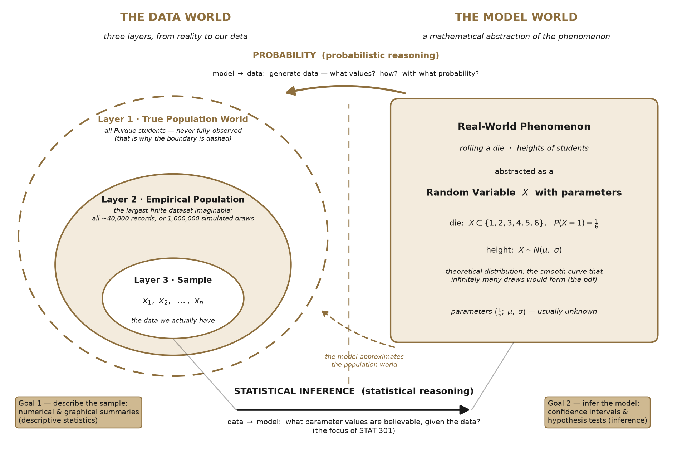

The Big Picture: Why Study Statistics?#
Learning objectives
After reading this chapter, you will be able to:
Explain how a real-world phenomenon is abstracted into a mathematical model with parameters.
Describe what a random variable is, and how it differs from a deterministic function.
Distinguish the two directions of reasoning: probability (model \(\rightarrow\) data) and statistical inference (data \(\rightarrow\) model).
Describe the three layers of the data world: the true population world, the empirical population, and the sample.
State the two goals of this course: describing data and inferring the model behind the data.
Before we learn any formulas, let’s build a map of the whole subject. Every topic in STAT 301 lives somewhere on this one picture. Whenever you feel lost during the semester, come back to this page and find where you are.

Fig. 1 The big picture of statistics: two worlds, connected by two directions of reasoning. The data world has three layers.#
From a Deterministic Function to a Random Variable#
You already know what a deterministic function is from algebra. Take
Once the input \(x\) is fixed, the output \(y\) is completely determined — same input, same output, every single time. For example, converting Celsius to Fahrenheit, \(F = 1.8\,C + 32\): if today is \(20^\circ\)C, it is \(68^\circ\)F. Not “probably 68” — exactly 68, always.
Now try to write a function for this: roll a die, and report the number on top. The “input” is the same every time (you roll the die), but the output changes from roll to roll. No formula of the form \(y = ax + b\) can describe this, because the outcome is not determined by the input. The world is full of processes like this: the number a die shows, the height of the next student who walks into SC 231, whether a coin lands heads.
This is exactly the gap that the idea of a random variable fills.
Definition 1 (Random Variable (informal))
A random variable \(X\) is a numerical outcome of a random process. We cannot predict any single outcome exactly, but the long-run pattern of outcomes is described by probabilities.
Example: the die as a random variable
Let \(X\) be the number shown when we roll a standard die once. Then
the possible values are \(X \in \{1, 2, 3, 4, 5, 6\}\);
if the die is fair, each value is equally likely: \(P(X = 1) = \frac{1}{6}\);
probabilities of combined outcomes follow: \(P(X \leq 3) = P(X{=}1) + P(X{=}2) + P(X{=}3) = \frac{3}{6} = \frac{1}{2}\).
Notice what we gained: we still cannot say what the next roll will be, but we can say precisely how the rolls will behave in the long run. Randomness does not mean “anything goes” — it means regular behavior in the long run, unpredictable behavior in the short run.
Look closely at the die example and you will see that specifying a random variable takes two ingredients:
the set of possible outcomes — the die’s faces determine that \(X\) can only be \(1\) through \(6\);
the probabilities attached to those outcomes — the word fair is what says each face has chance \(\tfrac{1}{6}\).
In everyday language, “chance” is the old word for what we now formalize as probability — it is the second ingredient, riding on top of the outcomes. Keep these two ingredients separate in your mind; the distinction is about to pay off.
Here is a bridge between the two ideas that we will use all semester. The heights of Purdue students are not all equal to one number, but they are not “anything goes” either — most are near some typical value. We can write
where \(\mu\) is the typical (mean) height — a fixed, deterministic part — and \(\varepsilon\) (epsilon) is the individual deviation from the typical value — the random part. One student’s \(\varepsilon\) might be \(+6\) cm, another’s \(-3\) cm. Later in the course we will upgrade the deterministic part from a constant to a line:
for example, predicting a student’s height \(y\) from their shoe size \(x\): the line \(ax+b\) captures the overall trend, and \(\varepsilon\) captures the fact that two students with the same shoe size still differ in height. A statistical model = a deterministic part + a random part. If you understand this one line, you understand where half of this course is heading (regression!).
The Model World: Abstraction and Parameters#
The right side of the picture is the model world. We take a real-world phenomenon — rolling a die, the heights of all Purdue students — and abstract it into a mathematical object: a random variable with a distribution.
Die: \(X \in \{1,\dots,6\}\) with each face having probability \(\tfrac{1}{6}\).
Height: \(X \sim N(\mu, \sigma)\), a Normal (bell-shaped) distribution with mean \(\mu\) and standard deviation \(\sigma\).
One free throw by a basketball player: \(X \in \{0, 1\}\) with success probability \(p\).
The numbers that pin down the model — \(\tfrac{1}{6}\), \(\mu\) and \(\sigma\), \(p\) — are called parameters. They play the same role as \(a\) and \(b\) in \(y = ax+b\): they are the knobs that make a general formula describe your specific situation.
Now the two-ingredients idea pays off. Compare a fair die with a loaded die that favors six, say \(P(X{=}6) = \tfrac{1}{3}\). Both dice have exactly the same possible outcomes — the faces \(1\) through \(6\) are stamped into the plastic. What differs is the probabilities over those outcomes. Same outcomes, different chances, different random variable. This is your first encounter with a theme that runs through the whole course: the same model family, with different parameter values, describes different worlds — and telling the fair world apart from the loaded one, using only observed rolls, is exactly what statistical inference does.
Here is the crucial twist: in real problems, the parameters are unknown. Nobody hands us \(\mu\), the true mean height of all Purdue students, and nobody tells us whether the stranger’s die is fair or loaded. The entire second half of this course exists because parameters are unknown.
Two Directions of Reasoning#
The two arrows in the picture are two opposite directions of asking questions.
Probability (model \(\rightarrow\) data). Here we assume the model is known and ask what data it will generate. Example: assuming the die is fair, what is the chance of rolling three 1’s in a row?
Statistical inference (data \(\rightarrow\) model). Here we observe data and ask what model could have produced it. You roll a stranger’s die three times and see 1, 1, 1. Do you still believe it is fair? Maybe — a 1-in-216 event does happen. But suppose you roll it 100 times and never see a 6. For a fair die,
about one in a hundred million. At some point the reasonable conclusion is not “we got lucky” but “this die is not fair.” Congratulations — you have just performed your first hypothesis test, informally. Making this reasoning precise (how surprising is too surprising?) is exactly what Chapters 5–9 do.
This course focuses on statistical inference
STAT 301 is a statistics course, not a probability course. We will use only as much probability as we need (mostly the Normal distribution) to power the data \(\rightarrow\) model direction. If the probability direction fascinates you — perhaps God created this world by randomly throwing dice! — courses like STAT 225 explore it deeply.
How is statistics different from your math classes?
Your instinct might be: “math is deterministic, statistics is random.” Half right — here is the cleaner cut.
Probability theory itself is math, and it is deterministic at the level of the rules: given a fair die, \(P(X \leq 3) = \tfrac{1}{2}\) is a theorem — exact, no doubt attached. What is unpredictable is each individual outcome, not the mathematics describing it.
The real difference is the direction of the problem:
Math (including probability) reasons forward from known assumptions to guaranteed conclusions. Given a fair die, the chance of three 1’s is exactly \(\tfrac{1}{216}\).
Statistics faces the inverse problem: the assumptions themselves (is the die fair? what is \(\mu\)?) are unknown, and we must judge them from data. Because our data are one random draw among many that could have occurred, statistical conclusions are never certain — instead they carry quantified uncertainty: “95% confident,” “significant at the 5% level.”
This is the cultural shift to prepare for: in a calculus class, an answer is right or wrong. In statistics, a correctly executed procedure still reaches a wrong conclusion some known fraction of the time — and knowing that fraction precisely is the achievement. In short: math gives certain answers to certain questions; statistics gives honestly-uncertain answers to uncertain questions — and tells you exactly how uncertain.
The Data World: Three Layers#
The left side of the picture is the data world — and it has three nested layers. Read them from the outside in.
Layer 1 — the true population world (the dashed circle). This is reality itself: the heights of all Purdue students, including the ones we will never measure. The boundary is drawn dashed on purpose: we never observe this world completely. Every question we care about ultimately lives here, yet we can never hold the whole thing in our hands.
Because Layer 1 is out of reach, we approximate it with the model world on the right: from theory, we posit a data-generating process — a random variable — to stand in for the population world. Sometimes the match is essentially exact: for a die, “\(X\) takes each value in \(\{1,\dots,6\}\) with probability \(\tfrac{1}{6}\)” is the process. Sometimes it is only an approximation: real heights do not follow a perfect bell curve — \(N(\mu, \sigma)\) is an idealization. But since the true world is never fully observed, a good approximation is the best we can do, and it turns out to be enough. The model’s theoretical distribution is the smooth curve (the pdf) that infinitely many draws from the model would trace out.
Layer 2 — the empirical population. No one — not even a computer — can actually produce infinitely many draws. What we can imagine is the largest finite dataset possible: all ~40,000 current student records from the registrar, or a computer simulation of 1,000,000 draws from the model. A large-but-finite dataset like this forms the empirical population distribution — a finite stand-in for the theoretical one. When the number of points is large, its histogram becomes nearly indistinguishable from the smooth theoretical curve. (In Chapter 4 you will see exactly this: histograms of data approaching an idealized density curve.)
Layer 3 — the sample (the innermost solid circle). In practice we cannot even assemble the empirical population. We draw a modest sample \(x_1, x_2, \dots, x_n\) — say 1,000 students — and this is the data we actually analyze. Reading the layers inward goes from reality to our data; statistical inference travels the other way: from the sample, we reach toward the model, and through the model, toward the world.
Why not just measure everyone? If we could complete a census — obtain the entire empirical population — then its average would stop being a mystery: add up all ~40,000 heights and divide. No uncertainty, no inference. But a census is usually impossible:
Too expensive or slow: measuring every U.S. household is a once-a-decade national effort.
The population may be conceptual: “all patients who will ever take this drug” cannot be measured today.
Measuring can destroy the item: to find the average lifetime of a brand of light bulbs, a census means burning out every bulb — you would know the answer and have nothing left to sell.
So we live with a sample, and the sample is only a shadow of the population. The gap between them — captured by the question “would a different sample give a different answer?” — is where all the interesting difficulties (and all the clever ideas) of statistics come from.
The Two Goals of This Course#
The picture shows the course roadmap in two boxes.
Goal 1 — describe the sample. Learn procedures to summarize data numerically and graphically: means, medians, standard deviations, histograms, boxplots, scatterplots. (Chapters 4, 10, 11.)
Goal 2 — infer the model. Learn inferential procedures — confidence intervals and hypothesis tests — that use the sample to make justified statements about the unknown parameters. (Chapters 5–9 and 12–15.)
Common misunderstanding
“Statistics is just calculating averages.” The average is Goal 1 — one number describing one sample. The heart of this course is Goal 2: knowing how far that average can be trusted as a statement about the whole population. A poll saying “54% support the policy” is Goal 1; the fine print “margin of error ±3 points” is Goal 2 — and by the end of this course you will know exactly where that ±3 comes from.
One final note on depth. In this introductory course, our job is to understand the concepts and carry out the procedures correctly. In more advanced courses, you would see the proofs behind these foundations and confront the messy realities of data — missing values, variable selection, and more complicated models. Think of STAT 301 as learning to read the map; later courses teach you to survey the terrain.